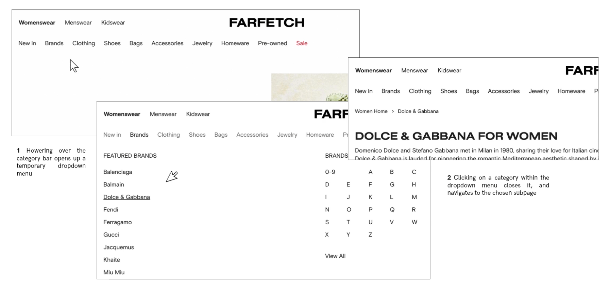
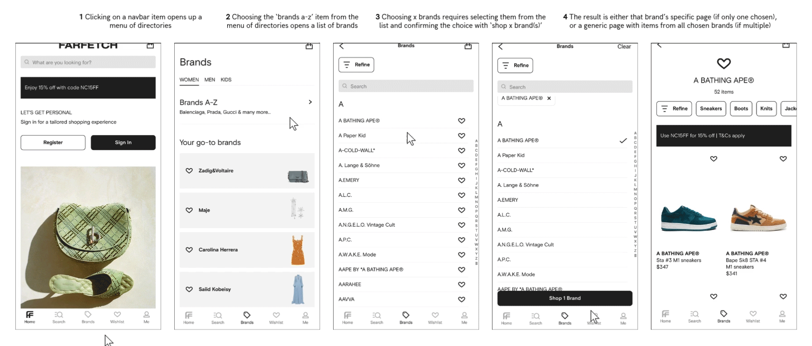
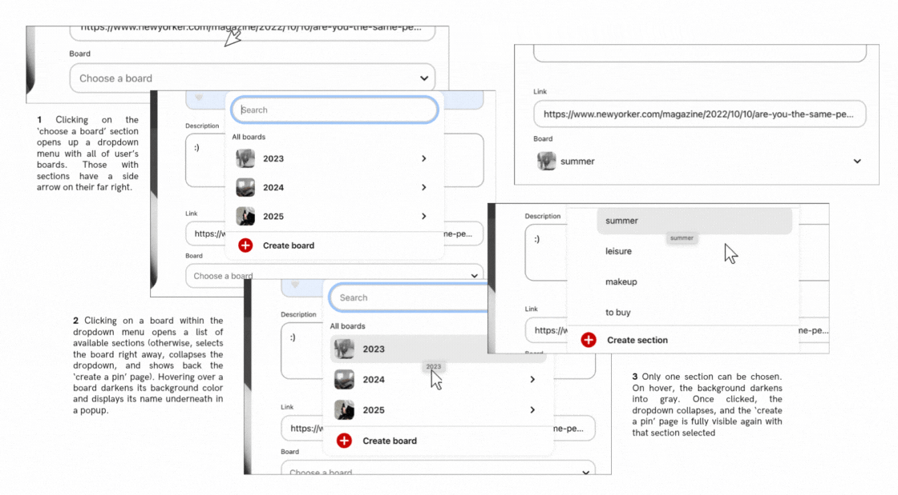
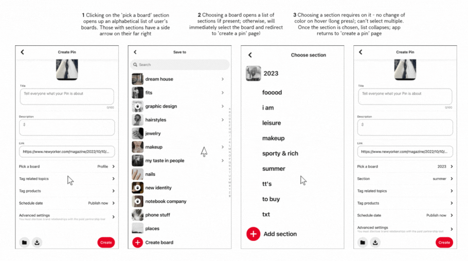
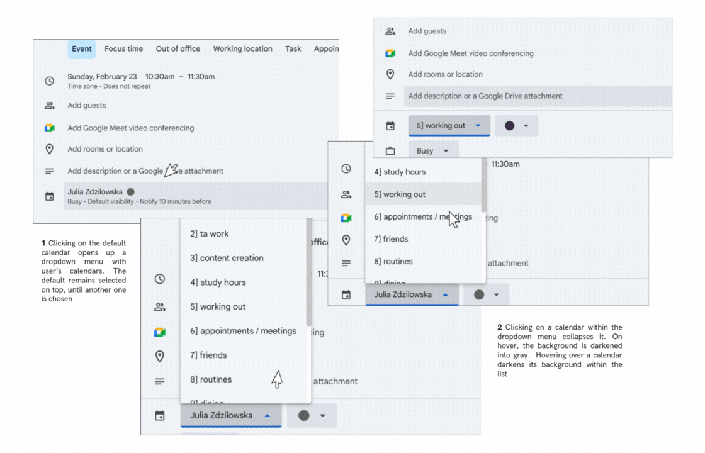
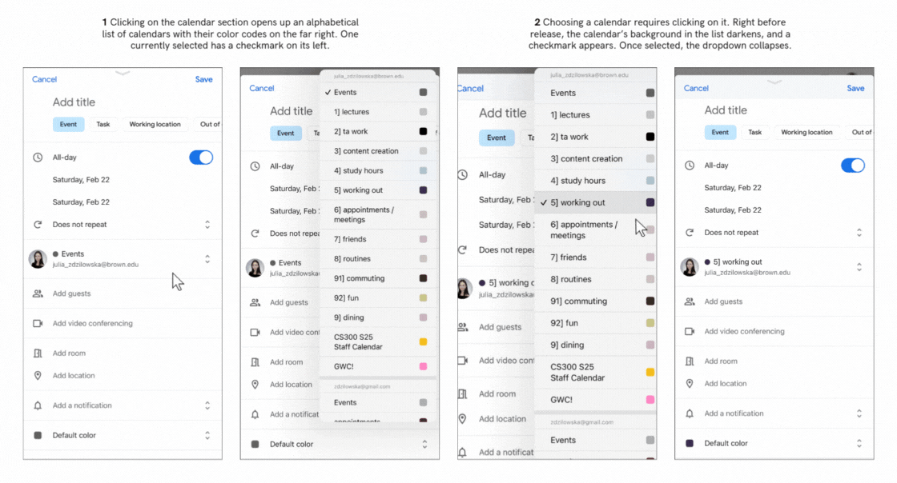

The case study below focuses on the accessibility of dropdown menus, aiming to improve them for all users, including those using keyboard, mouse, touchscreen, or screen readers. By evaluating - and potentially reworking - current implementations for better, the goal is to enhance usability & accessiblity without sacrificing function.
INPUT






| FARFETCH (dropdown menu for clothing item categories) | PINTEREST (dropdown menu for board selection when creating a pin) | GOOGLE CALENDAR (dropdown menu for choosing a calendar) | |
|---|---|---|---|
| Mouse/Touchpad | Clicking on any of its elements leads to a subpage specific to that element, and closes the dropdown; which item has been chosen is indistinguishable once redirected (all text has the same color). Hovering on any of its elements instead lightens up the names of the other items, and expands a submenu specific to the hovered-over item. Moving the mouse away collapses the dropdown menu. Hovering over an element within the submenu underlines its name; clicking leads to an associated page. Can select and copy any text (both in the navbar and in the collapsed dropdown). Learnable: hovering over a category opens the dropdown, clicking an item closes the menu & navigates to a new page (intuitive & easy to pick up). Memorable: consistent layout & visual feedback (underlines in the dropdown on hover; darker color of the navbar item once chosen). Efficient: hovering, can quickly preview & select options without extra clicks. | Clicking on the ‘choose a board’ section opens up a dropdown menu with user’s boards. Learnable: those with sections have a side arrow on their far right, and a hovered-over board will have a gray background with its name displayed as a popup. Efficient: can look up a board with the search bar (scrolling possible, but takes time with many boards). Memorable: all lists are alphabetical, and the layout of the menu remains the same (search on top, then boards). Clicking directly on a board without subsections selects it and collapses the menu. Clicking on a board with sections opens a secondary list of sections. Clicking on a section selects it and closes the dropdown. Can select any text, but on mouse release, it'll treat that selection as a click into the board/section and select it. | Clicking on the calendar section (one chosen so far is displayed by default) expands a dropdown with a list of user's calendars (learning curve - there's no accompanying text indicating that this is a 'choose a calendar' section, aside from the arrow on the far right, which implies that there's an expandable component available for that element). The calendar currently selected has a darkened background and a checkmark on the left of its name (learnable and memorable - intuitive usage, clear from the beginning which one was chosen previously; the scroll bar visible on the right reminds that other calendars might be available. Also, a small arrow in the 'choose a calendar' section implies that it's possible to expand a list, which is efficient for experienced users). Can scroll; in hover, the background of the calendar's list row darkens (even if hovered over the previously-chosen one with already darker background than others). Upon hovering outside of the dropdown, it remains visible; collapses only upon an out-of-bound click. Once selected via click, the dropdown collapses (efficient: no need to confirm selection). Can select text, but on mouse release, that calendar will be selected. |
| Keyboard | Limited support. Using tab, can navigate into the menu, but can't focus on any option other than "new in" (moves to the far-right search bar on second 'tab' press). To open the dropdown (works only for "new in"), must press 'enter' or 'space'; to close, 'escape'. Learnable: can move through the list with keyboard arrows or via 'tab'. Can't choose a general item (f.e., 'new in') & navigate to its page - enter will only open the dropdown menu, from which one must choose a subcategory (can select via enter, move via tab). Can distinguish which category has been chosen, as a blue border appears around an item on tab. Can't select specific text, only all (command+a). Can't navigate back to the main page without using the browser's back button. | Using tab, can navigate into the list of boards, and iterate through them with either tab or arrows - one currently focused-on has a darker background, as with hover. Can't focus on sections with tab (no accessbility support for it). To select, can click enter or space; to collapse the dropdown entirely, escape (can't go back to the previous dropdown). Can't select specific text, but can select all via Command+A. | Using tab, can navigate into the list of calendars, and iterate through them with with keyboard arrows (not tab). Once focused on, an element gains a bold blue border. To select, can click space or enter. Learning curve - in contrast to most web apps, once a list of calendars is opened, it's not clear that a 'focus' option is available, since 'tab' closes the list rather than focus on one of its calendars. Can't select specific text; only all on the page. |
| Touch | Dropdown menu expands from the bottom & covers the entire screen except for the menu items. Upon clicking 'brands', a submenu opens, where one can either navigate to a specific brand's subpage (by clicking on 'your go-to brands'), or go to the full list of brands available (by clicking on brands a-z). It's then possible to choose multiple brands - a checkmark appears on the right of the item. On long touch, the brand changes background color in the list into light grey. Can scroll and refine brands (into those selling men's, women's, kid's clothes). Can't select text on press & hold. To confirm selection, must click 'shop (x) brands' which will automatically redirect to a page with items of the chosen brands. Inefficient: can't preview items, must click on a menu item to see the subcategories. Memorable: order of the elements in the navbar. Learnable: checkmarks on the far right of each element, the menu still being visible on the bottom once the dropdown expands (can tell which element has been chosen). | Tapping on 'pick a board' opens the dropdown which occupies the entire page. Learning curve - the menu with 'pick a board' option once chosen is no longer visible, so the user might not know what they've navigated into. To collapse the dropdown, must select arrow on the top-left. Tapping on a board without sections selects it instantly and returns to the "Create Pin" page. Boards with sections (indicated by arrow on their far right) open a secondary list, and tapping a section selects it and closes the menu. Can't select text. Long-press doesn't change the background color of a board/section, but selects it on press release. Interestingly, can't search for a section on mobile (i.e., inefficient - must scroll). Navigation is fairly intuitive, as the dropdown design is consistent across devices. | To open a list of calendars, must click on the default calendar (similarily as on desktop, no text indicates that a choice of calendar is possible other than two (!) arrows indicating an expandable element for that section - i.e., learnability could be improved). The list occupies only part of the app; can click outside of its bounds to collapse it (efficient but not as accessible/learnable; easy to click out of the list, and there's no explicit 'close/x' button). The currently selected calendar has a checkmark on the left (learnable - understandable symbol even for new users). On long press, the background of a selected item darkens, but the dropdown collapses on release. The selection is automatically saved once the dropdown collapses. Can scroll, can't selected text. |
The Solution
[Details of accessible components implemented]
Impact
[Results and improvements]
Conclusion
[Final thoughts]